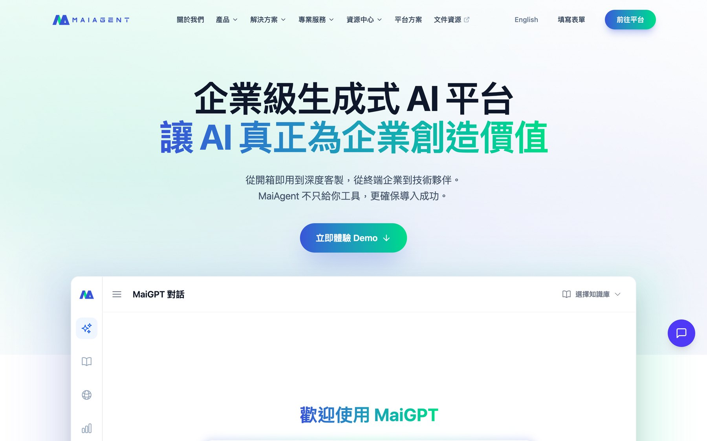
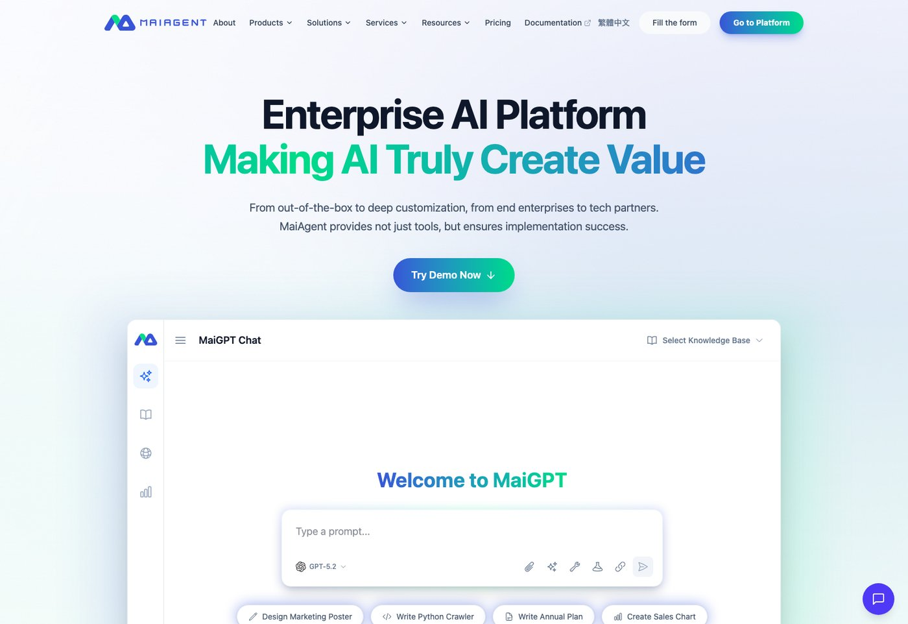
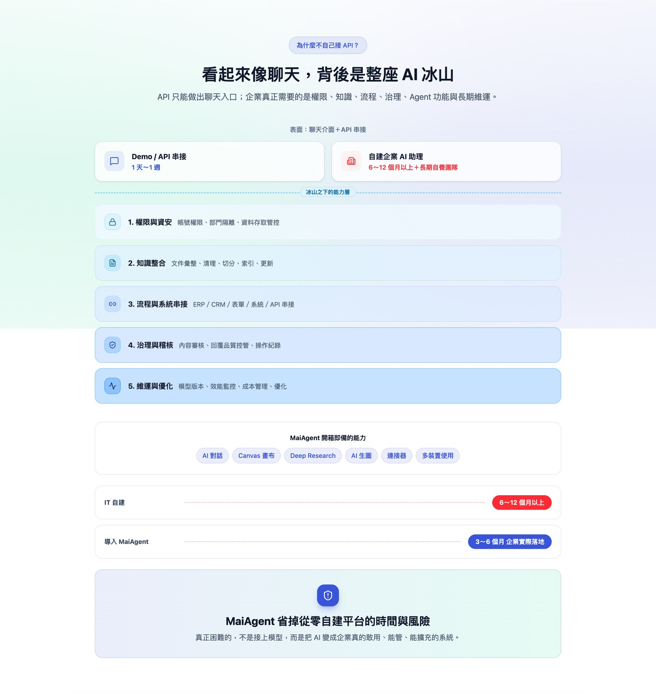
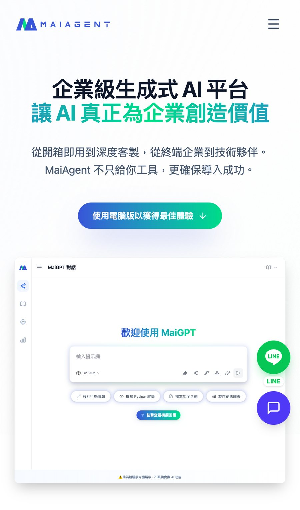
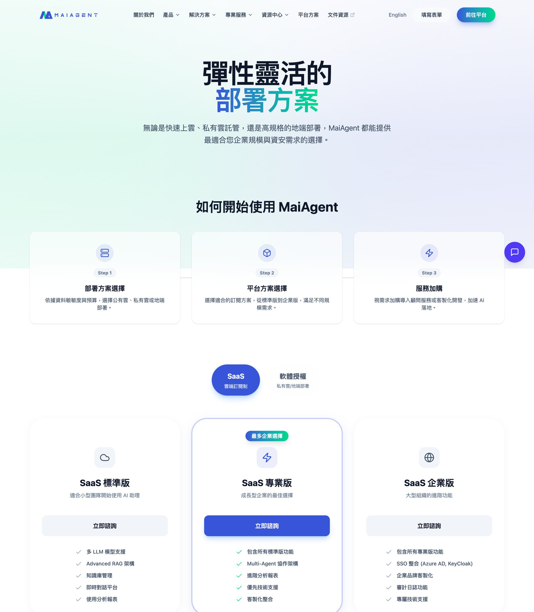
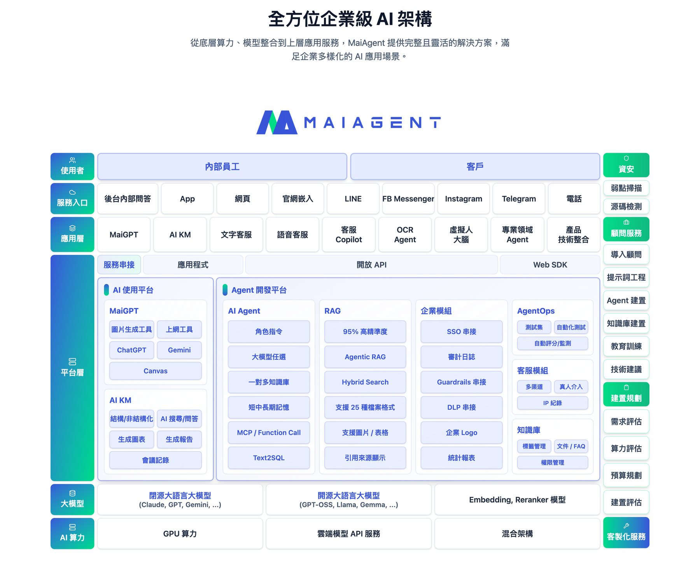
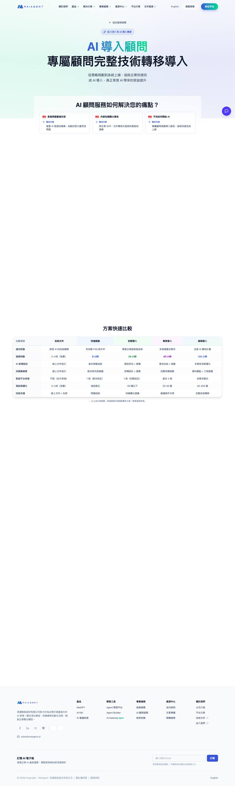
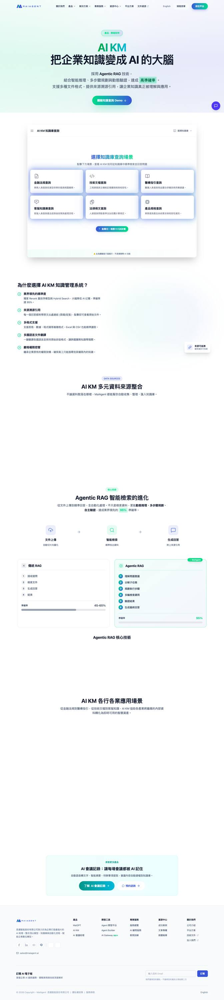

← 所有專案
官網與內容 CMS
公司對外網站，以及行銷團隊自行維運的內容後台。自第一個 commit 至交接由我獨立負責。網站已上線：maiagent.ai ↗
MaiAgent 思邁智能2025.11 – 2026.07

讓行銷團隊自己上線
內容後台
行銷團隊原本在 Notion 撰稿，再請工程師協助發佈，每次上線都要排進開發的時程。內容管理後台建置於同一專案後，他們可自行排程發佈、查閱版本歷史與操作日誌、一鍵寄送電子報，不再需要手動搬稿。
交接前另完成一輪後台稽核，修正排程發佈、時區換算與媒體庫上傳等問題；大圖原本超過 20 MB 即上傳失敗，改為自動壓縮後行銷可直接上傳原圖。
官網的內容與版面
前端介面與內容編排
官網本身為中英雙語，涵蓋 SEO、效能與無障礙優化及響應式改版。頁面的前端介面設計與內容編排由我負責：版面結構、元件樣式、各頁的文案順序與圖文安排，皆依產品線的敘事需求決定，而非套用既有版型。
產品線的敘事也重新整理：將官方產品簡報整理為產品線矩陣與導入路徑，讓業務與行銷引用同一份資料。
名單直接進 CRM
行銷活動的名單表單直接寫入 CRM，並自動於任務系統建立工單通知業務，取代原本人工轉貼的作業。
開發以 AI 輔助（Claude Code）進行。
實際畫面
點圖看原尺寸。






